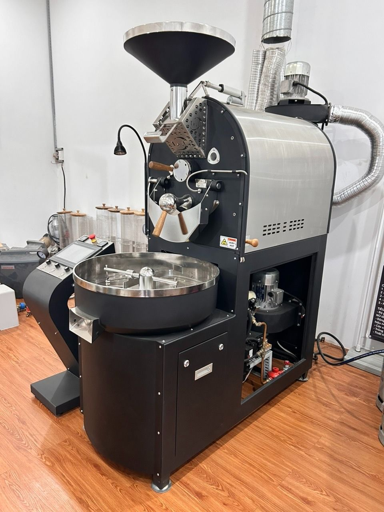
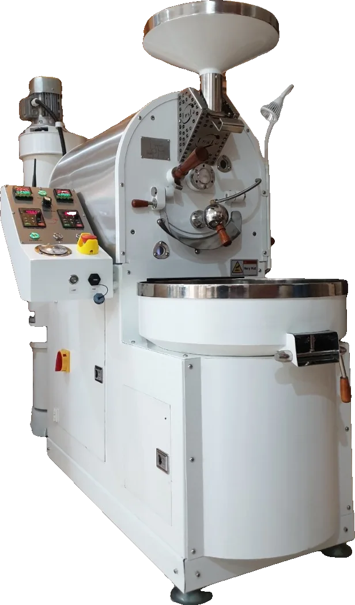

Flagship
OTL-06
Built for the professional roaster.
- Batch
- 2–6 kg
- Output
- 8–24 kg/h
The OTL-12 is designed for large-scale commercial production. An intelligent operating system and modern features bring consistency and efficiency to every batch.
01
Precise temperature and airflow management for every batch.
02
High performance with low energy consumption.
03
High-quality materials, suitable for continuous operation.
04
Meets large roasting needs with superior consistency.

Built for the professional roaster.

High volume, held steady.

Made for the café floor.
Send us your requirements and we will prepare a quote, delivery time and installation plan.